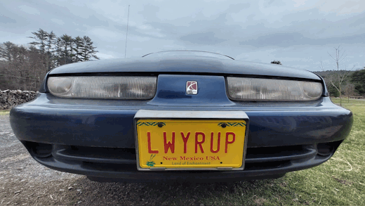
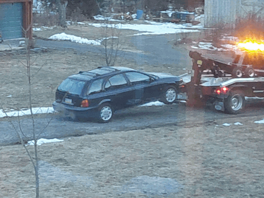
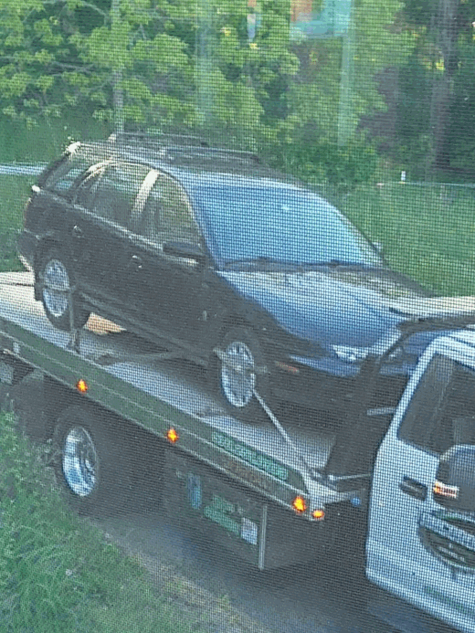

|
|
Mr. Saturn |
Pick One:
Mr. Saturn
|
|
Mr. Saturn is a 1997 Saturn SW2.
 How could you say no to that face? Apparently his previous owners could, considering I scored this absolutely beautiful specimen for $1. Obviously you don't just get a reliable daily driver for $1, so he had some problems to work through first. Mostly just typical old car things, like a bad battery ground, hoses, brakes, etc. Since this is a GM vehicle, there were also a few Saturn things to work though, such as the PLASTIC valve cover somehow warping, and a few sensors that like to kick it (also because they were made of plastic). But the tape deck did work. Oh yeah, this is gonna go just fine.
Saturn Fun Fact #1: He HATES Nirvana. I learned this little factoid on one of his first test drives, during which Smells Like Teen Spirit came on the radio, followed shortly by catastrophic fuel pump failure.
 This test drive did not end very well. After recovering from this minor mishap, all was smooth-sailing and he went into service as a daily driver.
Saturn Fun Fact #2: He's just a chill guy You ever notice how whenever something minor goes wrong on a modern car, it's always portrayed as a CODE RED EVERYTHING'S FALLING APART STOP RIGHT NOW DING DING DING DING situation? The Saturn does not play this game. The check engine light says "Service Engine Soon", it's not even pushing you to check on it right away. It will also never ding at you for any problem, which is nice, probably. Unfortunately, there are also times where maybe it could have been a little more urgent. Take for example, the first major incident since obtaining daily driver status. One day on my drive to work, the big red "BRAKE!" light that's usually reserved for the parking brake lit up. Given that I was traveling down the road at 45MPH at the time, I was fairly certain that the parking brake was not set. I decided to make the smart decision and wait until I got to work to look into it. As it turns out, the parking brake light will also turn on if the computer detects that the brake master cylinder is low on brake fluid. Sure enough, popping the hood reveals a very low master cylinder. Oops. Fortunately this is an easy fix. I still need to figure out where the fluid went, but for now I can just pop down to Harbor Freight and pick up their cheapest bottle of DOT-3 to get me home and everything will be just fi-
 OH COME ON Yeah, the Saturn wasn't gonna let me have that one. After topping up the brake fluid, the brake pedal inexplicably started going straight to the floor. Now I may not be the sharpest tool in the shed, but even I know that when your brake pedal suddenly goes 3 inches lower than it used to, it may not be a very good idea to drive the car.
Unfortunately, this incident seemed to kick off a bit of a low point for Mr. Saturn. Over the course of the next couple months he suffered from several ailments, like the clutch pedal constantly squeaking and getting caught, the hubcap falling off (and getting run over), and worst of all, the death of the tape deck. I repaired as things broke, but he was beginning to get on my nerves. After a while, the incidents seemed to stop. To celebrate my noble steed, I decided to finally bite the bullet and get the A/C working. This went off without a hitch, which was extremely suspicious. Sure enough, on the very next drive Mr. Saturn decided that since we were working on comfort features now, I needed to be reminded who I'm dealing with here. And so, the parking brake cable snapped. On a hill. With me in front of the car. That's right, Mr. Saturn decided to remind me of how things work around here by trying to kill me. At this point, most people probably would've called it quits. For some reason, I decided to solider on anyways. At this point, Mr. Saturn decided that it was time to go all in. This was his big chance to finally break me. After getting off work one day, I got in, drove off, tried to upshift to 2nd, and... BOOM ...accompanied by the gear shift going completely limp. That's probably not good. Unbeknownst to me, the bushing that connected my gear shift to the shift linkage had just shattered. As it turns out, relying on 30 year old rubber to hold your shifter together is not a very good idea. Fortunately for me, everything went to shit before the transmission pulled out of 1st, so now I have two options:
You can guess which one I picked. The 30 minute drive suddenly became a nearly 2 hour one, during which I nearly overheated the car, got pulled by the police, and even got passed by a Jeep. How humiliating.
Saturn Fun Fact #3: He's Actually Pretty Great Up until now, I've mostly been talking about the mishaps, as those are obviously better stories. It may have also misled you into thinking that this car isn't nearly as great as it really is. From a historical perspective, Saturn is objectively interesting. Not only is it a rare moment of GM admitting their faults (if only for a brief moment), but they really did try to innovate here. Obviously, the Saturn is not a luxurious car. In fact, it can be pretty cheap in some areas. However, they've managed to make the rest of the car so fantastic that it doesn't even matter. Somehow they managed to make a FWD station wagon incredibly fun to drive. I'll put it this way: whenever I drive another car, I feel like I'm driving a car that's been lobotomized. That's how dialed in they got it. I know based on the stories I've shared above it may not seem it, but he really is quite reliable too. They don't show the countless bad days, breakups, and every other time that I needed him and he was right there waiting for me. Mr. Saturn is the kind of car that you consider part of the family. Treated right, a Saturn like this will serve you well for many years and even more miles (Mr. Saturn is currently sitting at 220k!) Not to mention that it'll embarrass your friends and family with its great gas mileage, I've managed to average 43MPG on my commute before.
Here's to the best thing GM ever ruined!
|
|